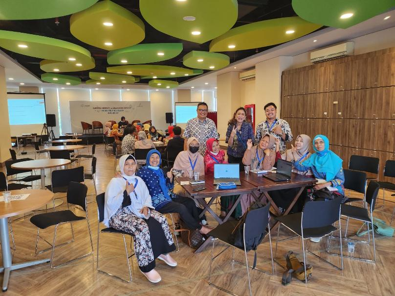
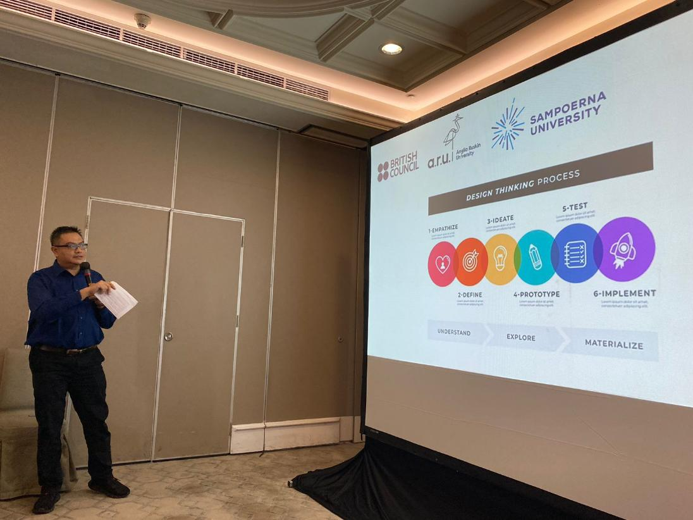
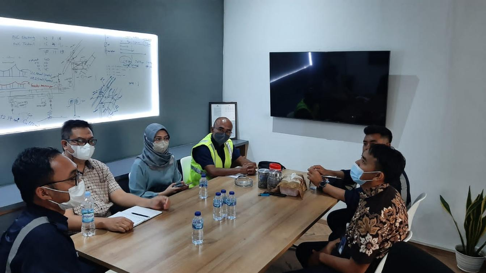
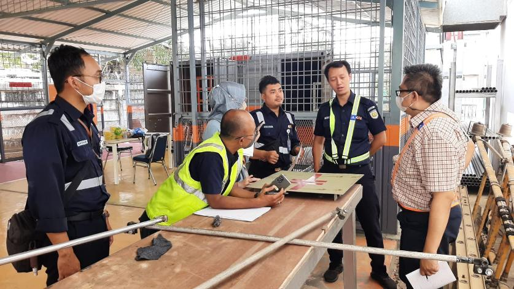
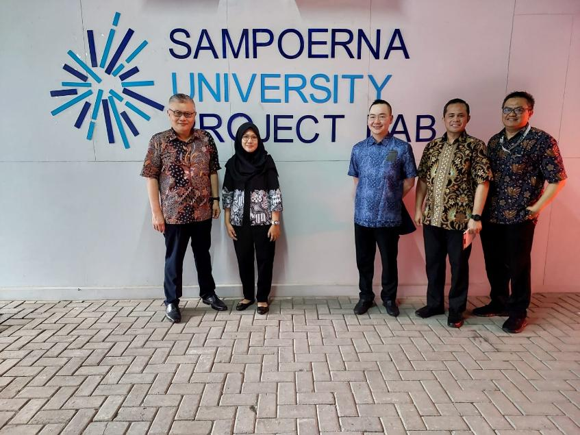

PROJECTS PARTICIPATION
Past Participation





- Principal Investigator, Assessing the Potential of 4D Printed Smart Packaging for Medical Products, (January - December 2025).
- Principal Investigator, Development of 4D Printed Finger Self-Actuator Grippers Using Heat-Conductive Wire (November 2024 - October 2025).
- Principal Investigator, Design Optimization of a 4D Printed Self-Actuating Gripper with Heat Stimulus (November 2023 - October 2024).
- Co-Investigator, Mechanical Property Analysis of DLP 3D Printed PLA and Nanoparticle Mixture (November 2023 - October 2024).
- Principal Investigator, National Grant for Fundamental Research entitled Innovation in Polymer Micro-Fluid Device Fabrication Process Using 3D Printing (January - December 2023).
- Co-Investigator, UK-Indonesia Going Global Partnerships (GGP) Grant 2022 entitled Game-EduTech: Teachers' training using sustainability and culture based gamified tools for engineering focused STEM learning (February - August 2023).
- Principal Investigator, Analysis of The Printing Parameters on 4D printed Polylactic Acid (PLA) Structures (September 2022 - August 2023).
- Co-Investigator, Mechanical Study of PLA/Graphene Oxide/Silicon Dioxide Composite as 3D-Printed Material (September 2022 - August 2023).
- Principal Investigator, Development of Microfluidic Devices Fabrication Using Digital Light Processing 3D Printing Process (November 2021 - September 2022).
- Principal Investigator, Development of Electric Discharge Machining (EDM) using solenoid actuator for educational purpose (November 2020 - September 2021).
- Principal Investigator, Development of Magnetic Abrasive Finishing Setup to Improve Surface Finish of Microfeatures Produced by Milling Process (November 2019 - July 2020).
- Principal Investigator, Development of Ball Tip Milling Magnetic Abrasive Finishing to Improve Surface Finish of Biocompatible Materials (April 2018 - March 2020).
- Principal Investigator, Micro-Cutting of Biocompatible Materials Used for Medical Applications (June 2015 - September 2017).
- Co-Investigator, UV Disinfection Robot: Development for Autonomous Cleaning Platform based on Ground Vehicle Robot (November 2020 - September 2021).
- Co-Investigator, Modes and Progression of Tool Deterioration and Their Effects on Cutting Force During End Milling of Hastelloy 242 Nickel Based Superalloy with Nano Coolant Approach (April 2018 - April 2020).
- Co-Investigator, Analysis and prediction of the cutting forces of Three-Dimensional End Milling using Finite Elements Modelling (June 2017 - June 2019).
- Co-Investigator, Suppression of Chatter in High-Speed Milling Using Microcontroller Based Speed Controller by Spindle Speed Variation Method (May 2017 - May 2019).
- Co-Investigator, Investigation of Micro-Abrasion Behaviour of Nano-Ceramic in Magnetorheological Polishing Fluid (August 2016 - July 2019).
- Co-Investigator, Characterisation of Nano-Coolant for Improving Cooling Channel Design in Hot Press Forming (June 2016 - June 2018).
- Co-Investigator, Development of a Low-Cost Miniature Waterjet Machine for Micromachining Applications (June 2015 - June 2017).
- Research Fellow, Efficient Wafering and Texturing of Single and Multi-Crystalline Silicon for Solar Cells (August 2011 - January 2015).
- Research Student, Producing Novel Thin Sheet Embossing Tools for Mass-Manufacturing of Polymer-Based Microfluidic Devices Using Advanced Micro-Cutting Technology (2008 - 2010).
Current Research Interests
- Investigating the influence of various stimuli such as temperature, humidity, pH on the shape-changing behavior of 4D printed structures.
- Developing novel design methodologies for 4D printed objects with predictable and controllable shape transformations.
- Exploring the use of advanced materials including shape-memory polymers, hydrogels, and stimuli-responsive composites, for 4D printing applications.